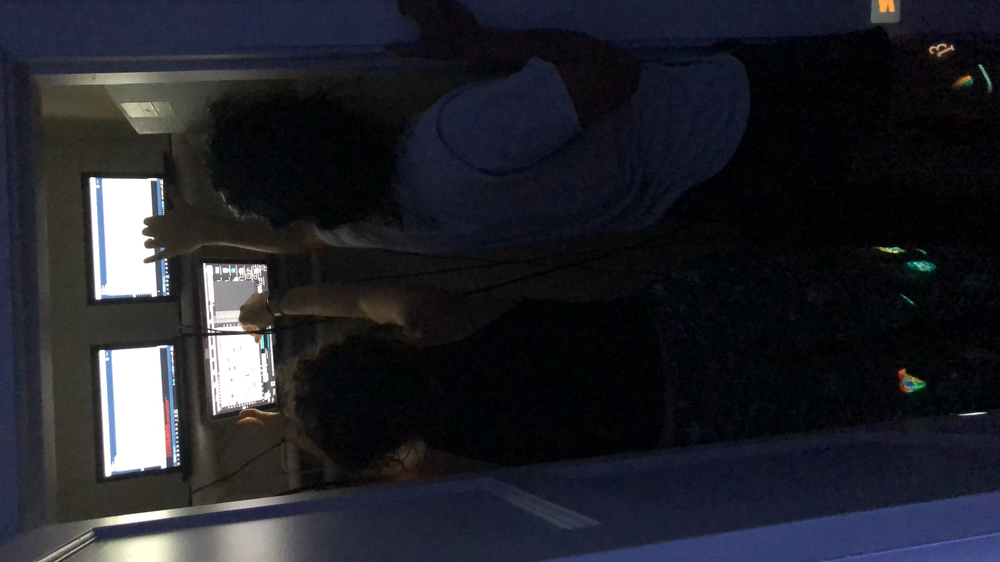

caretaker's lounge is a digital, interactive installation using motion sensors to control lights and sound, with a Kinect triggering video playback.

this group installation required a very short time for idea, design, development, and installation. the concept was based around the history of the room that we had for the installation at Alberta Abbey, which was the old caretaker's room. what might the caretaker's dreams look and sound like?
the photos and videos were taken from around the Alberta Abbey building to be projected along the walls, simulating what the caretaker might see in their dreamns after going through the same rooms and halls everyday. the Kinect triggered the playback of the photos and videos when sensing that somebody was in the room, and when it sensed no one in the room, it went black. upon entering and exiting, motion sensors triggered audio gathered from around the building, creaks that the caretaker heard all throughout their day that might have seeped into their dreams. the motion sensors also triggered color changes in the room's lighting.